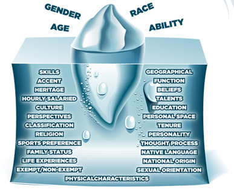

In addition to focusing on the skills or technical qualifications needed for positions within the agency, NRCS continuously strives to create a workforce that is representative of the national population and, specifically, the communities in which we work.
When you think of diversity in the workforce, what comes to mind? Race? Gender? Of course these are both accurate, but diversity relates to more than just gender and ethnicity or national origin. Many other qualities, such as veteran or disabled status, career-level, education, personality, and other personal variables all characterize diverse qualities in individuals.
NRCS aims to think of diversity in a holistic sense, and create a workforce that can draw on a multitude of backgrounds and experiences in order to develop solutions as diverse as the ecosystems we aim to conserve.